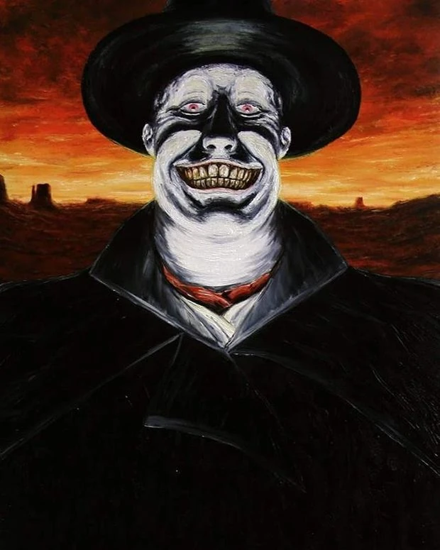

I was first introduced to Cormac McCarthy through his 10th novel, “The Road”. A book I found somber with its gruesome depictions of humanity at its worst. His descriptions of a world with civilization razed and desolate, and within it all that remains a few pockets of humanity struggling to survive.
“He walked out in the gray light and stood and he saw for a brief moment the absolute truth of the world. The cold relentless circling of the intestate earth. Darkness implacable. The blind dogs of the sun in their running. The crushing black vacuum of the universe. And somewhere two hunted animals trembling like ground-foxes in their cover. Borrowed time and borrowed the world and borrowed eyes with which to sorrow it”
Yet, The Road is a book about hope. A reminder that even as the inevitability of humanity’s collapse is plain to see, when nature itself has already given up, and the people you meet on the road are cannibals or murderers, as long as we have someone to rely on, to love, and to protect. We persist. It takes more than the apocalypse to break our strongest bonds, husband and wife, sister and brother, and in the case of The Road, between father and son.
"You have to carry the fire. I dont know how to. Yes you do. Is it real? The fire? Yes it is. Where is it? I dont know where it is. Yes you do. It’s inside you. It was always there. I can see it. Just take me with you. Please. I cant. Please, Papa. I cant. I cant hold my son dead in my arms. I thought I could but I cant. You said you wouldnt ever leave me. I know. I’m sorry. You have my whole heart. You always did. You’re the best guy. You always were. If I’m not here you can still talk to me. You can talk to me and I’ll talk to you. You’ll see. Will I hear you? Yes. You will. You have to make it like talk that you imagine. And you’ll hear me. You have to practice. Just dont give up. Okay? Okay."
Despite the fathers death, The Road ends on a uplifting note. The father lives within the spirit of his son, which was the only reason left for him to live. As we see the child get taken under the wing of another “carrying the fire,” we can almost imagine the soul of the father breathing a sigh of relief, his mission finished. It was enough for me to shed a tear.
Which is why I was so confused after finishing McCarthy’s fifth novel, Blood Meridian.
The setting is similar in many ways. The wild frontier of a young America looking to take hold of its manifest destiny. The rosy histories paints it as a noble conquest, full of frontier heros such as Daniel Boone, David Crockett, Jim Bridger, and Kit Carson. Whose stories I would read in my bed, dreaming later on of my own escapade taming the wilderness and building civilization.
Cormac McCarthy of course, spits on that version of history in the face. In his 10 year endeavor to complete the book, he writes an almost biographical account of the Glanton Gang, and follows closely their exploits taming the frontier in their own way, by murdering the natives. Each scape fetches a silver dollar, so the Glanton gang razes whole villages: scalping men, elders, women, and even children make no difference. In this hellscape of bloodshed and greed, within a degenerate cast of characters lies the main character of, The Kid. While The Kid is by no means guiltless, as he kills and robs at his own discretion. But through him I saw McCarthy showing the “fire” of humanity carried by the father and the son in The Road. He volunteers to treat his comrades wounds when no other would, he never abandons those that truly rely on him, and even in the face of his greatest enemy, he refuses to stain his honor by shooting Judge Holden in the back.
And god. Judge Holden is a character that definitely deserves to be shot in the back. While noted to have existed in real life through the accounts of Samuel Chamberains My Confession: Recollections of a Rogue, his character is brought to life by the writing of McCarthy. In Judge Holden, McCarthy manages to truly describe evil incarnate as well as you can with words on a page. A genocidal murder, a sadist taking pleasure in the torture of others, a rapist and pedophile, its hard to imagine a crueler character besides the devil himself walking the earth. The worst part is, I believe Judge Holden would be flattered to hear himself described as such.
“Whatever exists, he said. Whatever in creation exists without my knowledge exists without my consent. […] The man who believes that the secrets of the world are forever hidden lives in mystery and fear. Superstition will drag him down. The rain will erode the deeds of his life. But that man who sets himself the task of singling out the thread of order from the tapestry will by the decision alone have taken charge of the world and it is only by such taking charge that he will effect a way to dictate the terms of his own fate.”
So when I saw this clash of the “burning fire of humanity” in our protagonist facing off against this Satanic Boogeyman, naturally, just like all the happy endings of the books I’ve read before, fresh off the hopeful note that The Road left me with, I expected I see The Kid prevail over his nemesis, highlighting once again our perseverance against the darkest pits of evil.
But no, the kid gets his body crushed by the Judge, and as the splattered remains of his brain slides down the back of a bathroom wall, the Judge dances his jaunty jig, corrupting all with his influence.
"And they are dancing, the board floor slamming under the jackboots and the fiddlers grinning hideously over their canted pieces. Towering over them all is the judge and he is naked dancing, his small feet lively and quick and now in doubletime and bowing to the ladies, huge and pale and hairless, like an enormous infant. He never sleeps, he says. He says he’ll never die. He bows to the fiddlers and sashays backwards and throws back his head and laughs deep in his throat and he is a great favorite, the judge. He wafts his hat and the lunar dome of his skull passes palely under the lamps and he swings about and takes possession of one of the fiddles and he pirouettes and makes a pass, two passes, dancing and fiddling at once. His feet are light and nimble. He never sleeps. He says that he will never die. He dances in light and in shadow and he is a great favorite. He never sleeps, the judge. He is dancing, dancing. He says that he will never die. THE END"
So, what does it all mean?
On one hand, we have The Road, illustrating the beautiful nature of humanity’s “fire” and our bonds of love persisting during an apocalypse.
On the other hand, we have Blood Meridian, which depicts the character representing evil incarnate achieving total victory over our protagonist, a young man holding onto his shred of humanities “fire”.
So what is Cormac McCarthy trying to say about humanity? Are we truly able to retain our noble and good traits, where love transcends all evil… or is it that in each of us the seed of chaos will eventually conquer, that without the restrains of civilization and law to bound us that we will give in to our base desires, murdering and fighting. In the words of Judge Holden himself,
"war is the truest form of divination. It is the testing of one’s will and the will of another within that larger will which because it binds them is therefore forced to select. War is the ultimate game because war is at last a forcing of the unity of existence. War is god."
Its my belief that within these two vastly different conclusions McCarthy describes how each of us has a choice.
Humanity after all, is only the sum of the individuals who make it. There will always be evil in the world. Characters like Judge Holden, whose mission it is to spread their evil and corruption. In all of our lives, there will be corrupting influences, maybe not as bad as Judge Holden, but still whether inadvertently or purposefully, those who try to make our lives a bit more miserable. It could be the incendiary media we watch that want to get us mad, “friends” who constantly want to get you drunk, maybe even a new crumbl cookie flavor trying to get us to stray from our healthy diet.
Like the Glanton Gang, we can choose to give in to these base desires, nothing is easier. Or like The Kid we can choose to reject them. It will hurt, deleting social media, or dropping friends, or letting a cookie flavor of the week pass by without being able to savor it. The sacrifices we make won’t be quite as dramatic as The Kid, who lost his life to retain his humanity. Yet the result is the same, to live our lives the way we truly want, and stick to our truest goals without detraction, finding for each of us what we call The Good Life.
The Road gives good advice. In a world where degeneracy is commonplace. Where most of humanity have given themselves to murder and rape. The bond between father and son persists. Similarly, we must find and keep onto those in our lives who truly care about us, who want us to live long and succeed, to carry the fire of humanity.